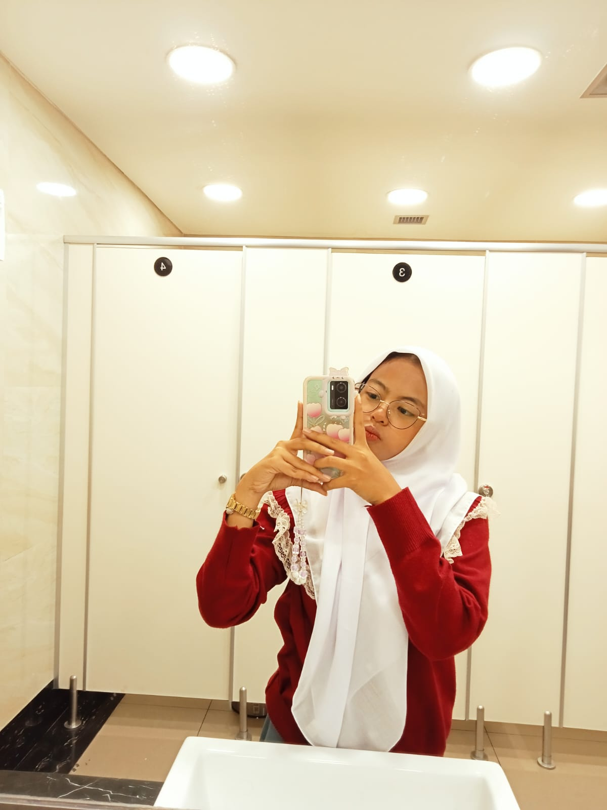
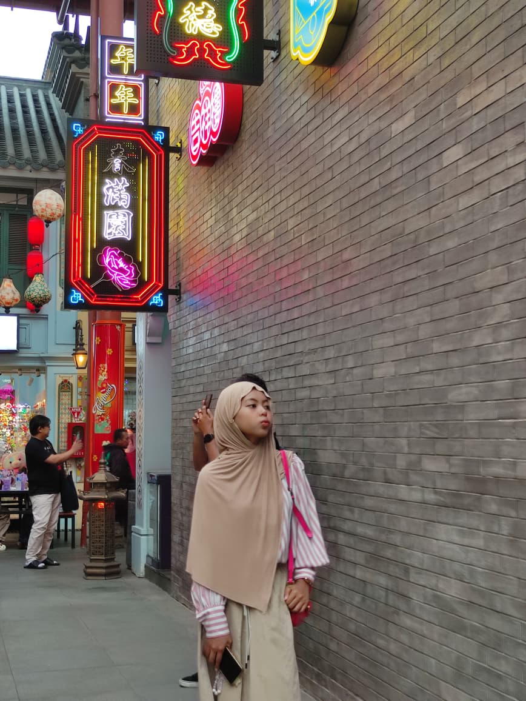

Cahaya Senyuman
Ketulusan dalam setiap senyuman
Keanggunan Abadi
Kecantikan yang memancar dari dalam

Momen Bahagia
Kebahagiaan yang menular

Kelembutan Hati
Sifat penyayang yang tulus

Kecerdasan Memukau
Kepintaran yang menginspirasi
Harmoni dengan Alam
Keindahan yang selaras dengan alam